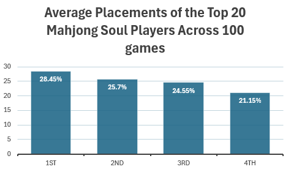

A deep dive into the world of mahjong and its gambling connotations, in an effort to answer the question: Is Mahjong a Fair game?

Mahjong (also spelled mah-jongg) is a traditional 4-player tile-based game that originated in China during the mid- to late 19th century. While the exact origins are debated, most historians agree it emerged around the late Qing Dynasty (mid-1800s) from earlier Chinese card and domino games, particularly a draw-and-discard card game called Madiao. The name mahjong (麻将/麻雀, máquè) is usually translated as “sparrow,” likely referring to the chattering sound tiles make when shuffled.
Early forms of the game were played as a social pastime and gambling diversion among merchants and communities throughout eastern China, especially near treaty ports such as Shanghai and Ningbo. By the early 20th century, mahjong had spread widely within China and beyond; it reached Japan in the 1920s, where it was adapted into local variants, and was brought to the United States and Europe by expatriates and travelers around the same time. In the U.S., Standard Oil executive Joseph Park Babcock popularized the game after World War I, publishing simplified rules and helping fuel a major mahjong craze in the 1920s. (Tatas, 2025)
Through the 20th and 21st centuries, mahjong evolved into many regional forms — including Chinese Classical, Japanese Riichi, and American Mahjong — each with its own rules and scoring systems. The digital age brought about many online mahjong clients, which exploded its popularity, especially among the younger generation. Part of the appeal of mahjong and why its able to captivate the hearts of so many players across centuries is its delicate balance between gambling and skillful play. Mahjong as a game has many mechanics built-in that can even allow a player to win at the start of the round without doing anything. Hence, this begs the question of whether the random elements of Mahjong overpower a player’s ability to influence the outcome of the game, turning the game into essentially a dice roll.
Situations like the one described above (player winning the round without having to do anything) are essentially the result of a really lucky shuffling sequence that lands the player with a winning hand on the first round.
Shuffling is perhaps what mahjong is most known for, where all 4 players collectively “wash” the tiles together creating the signature clacking sound of tiles colliding with each other. This is also where much of the game’s randomness takes place - not only in the way the 4 walls of tiles are built at the start of the game, but also in how each player’s hand is dealt.
 Figure 1: Mahjong tiles being shuffled after a round (Hacking Chinese)
Figure 1: Mahjong tiles being shuffled after a round (Hacking Chinese)
On the other hand, there are also several player-dependant, skillful plays in mahjong that are possible. For example, a calculated discard in a turn can take a player several steps ahead towards a winning hand, while also defending the player from providing the necessary tile that other players need to win.
Tying this back to the initial question, if the randomness introduced through shuffling were so strong that they overpower any display of skill, a player’s lifetime placement distribution should average out to roughly 25%. To test whether this is true, I will be taking samples of the top players’ lifetime placements in an online Japanese Mahjong client called Mahjong Soul. My reasoning for choosing the top players as the population to focus on is because out of all players on the client, they should be the ones who know most how to assert their skill to tip the game in their favor.
Mahjong Soul is also one of the largest modern online mahjong platforms that does not involve gambling on the outcome of the game. While it does focus on the Japanese variation of the game, the additional rules do not vary greatly from the more traditional, Chinese versions of the game. Further, each game has its own hash code which players can use to verify that each game is free from influence from external or third-party tampering.
Now for the moment you’ve all been waiting for: below is a chart depicting the average placements of the top 20 players on the Mahjong Soul client based on their most recent 100 games. For reference the player population of Mahjong Soul is roughly 7,000,000.

Figure 2: Average placements of the top 20 Mahjong Soul players
From the chart above, it can be concluded that the average placements of highly skilled players on Mahjong Soul is not an even 25% across all placements. This makes a strong argument for the randomness of mahjong not being strong enough to overpower a player’s ability to influence the outcome of a game, as there are clearly players who are able to tip the game to their favor despite the inherent randomness.
As with all scientific work, there is room for further analysis and improvements to my methodology. Perhaps the most obvious next logical step is to gather data from real-life games and see if the results match those found in online clients, or expanding the study of online clients to others which offer a platform for different variations of mahjong. For more minor improvements or further analysis, this study could be performed for the lower ranks as well, as an argument could be made that with less player skill, placements will be affected more by luck, thus shifting the distribution of placements toward a more even 25% spread.
With a more solid study, this data could be applied to building new tools for mahjong players. For example, a correlated relationship could exist between a player’s playstyle and their distribution of placements – more aggressive players take more risks and are therefore punished more often, leading to more 3rd and 4th place finishes, while passive players are more reserved and only make bold moves after careful consideration, leading to better placements overall.
While Mahjong is a game invented centuries ago, its certainly stood the test of time and embedded itself as a cornerstone in many Asian cultures, and can act as a bridge across generations. Luck will always play a role in all games, but perhaps instead of seeing it as a hinderance or cop-out, we can see it as a metaphor for life: to challenge and defy the odds, and give even the worse hands a chance to turn into a win.